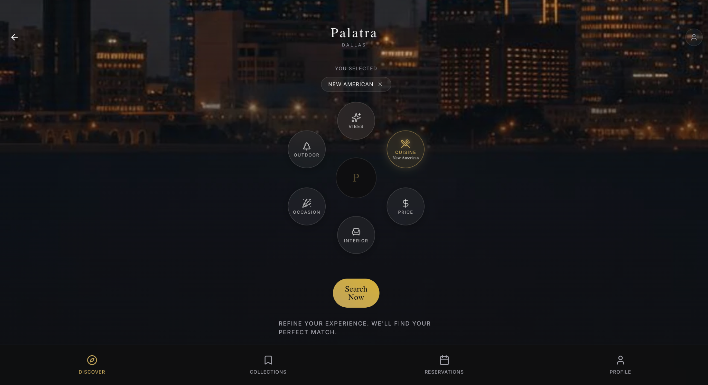
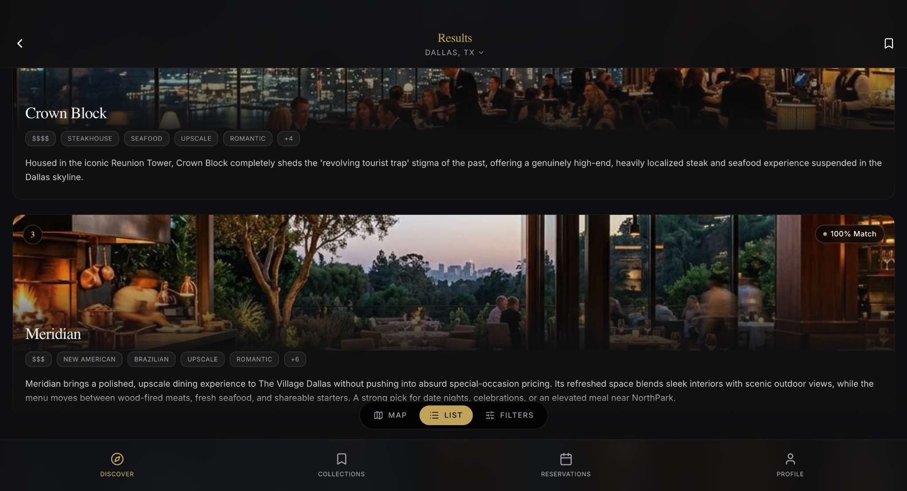
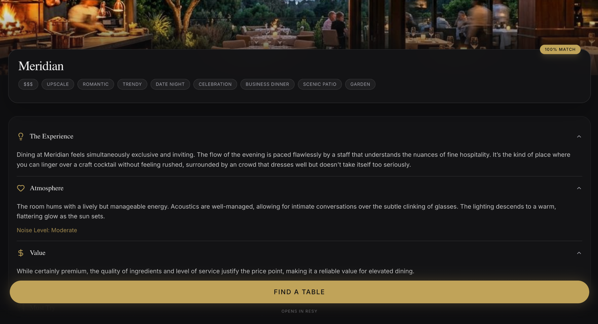
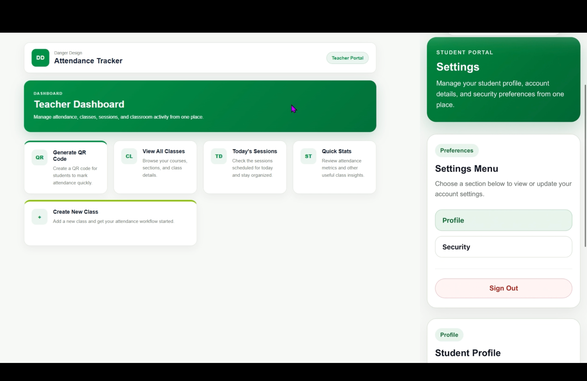
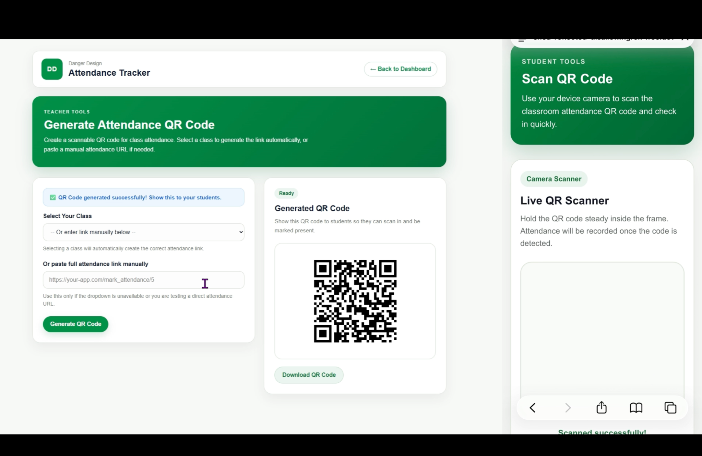
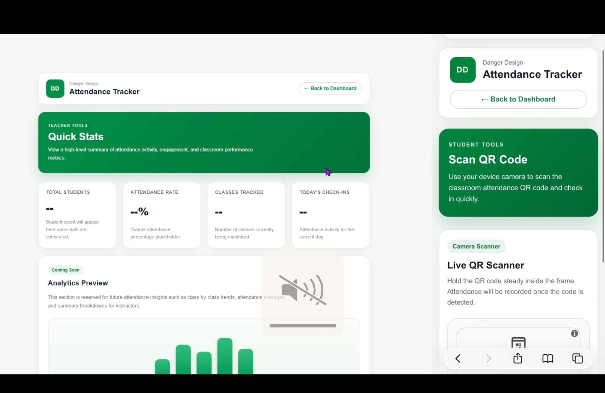
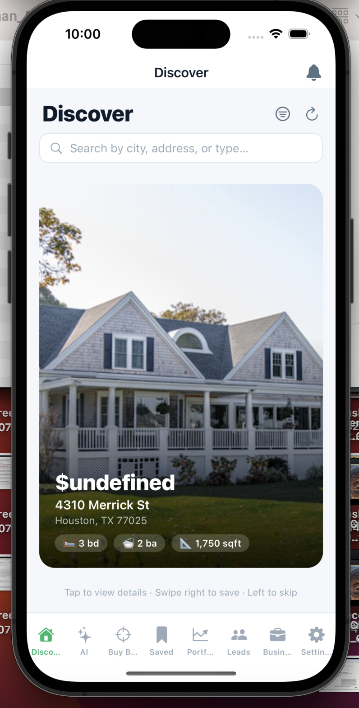
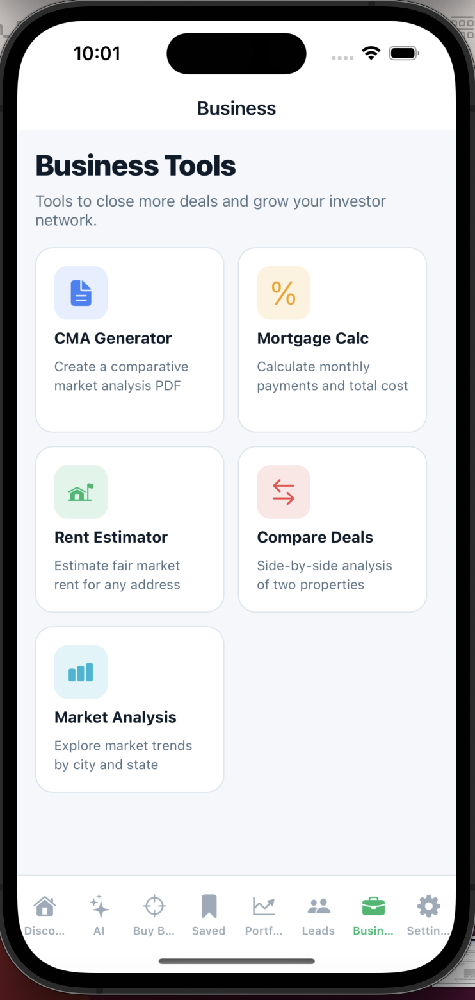
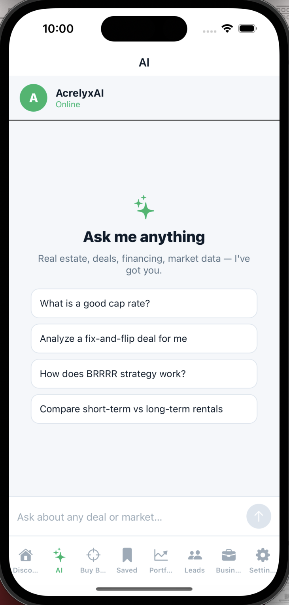

Customer Retention Automation
Built a Python/RingCentral re-engagement system and measured post-campaign behavior with Zoho Analytics and advanced Excel.
≈40% increase in returning-buyer engagementI’m Safwat.A product-minded technologist building across software, data, UX and early-stage products.
My strongest work sits at the intersection of product thinking, technology and systems design — where deciding the right thing to build matters as much as knowing how to build it.
Traditional restaurant search is good at telling users where to eat, but much worse at answering what the experience will actually feel like. Palatra reframes discovery around intent, context and atmosphere.
Important dining decisions often require bouncing between menus, reviews, social media, reservation apps and restaurant sites.
Users refine recommendations through vibe, cuisine, occasion, price, interior and outdoor experience before exploring curated matches.






I designed and implemented the interface for a role-based classroom attendance platform, creating distinct teacher and student experiences within one consistent design system.
Keep instructor administration powerful while making student check-in almost frictionless, across desktop and mobile layouts.
Acrelyx is an active commercial product under development, combining property discovery, investment analysis, portfolio workflows and AI-assisted research.
Built across mobile frontend and backend application layers with database infrastructure, Redis, BullMQ and asynchronous background processing.



Built a Python/RingCentral re-engagement system and measured post-campaign behavior with Zoho Analytics and advanced Excel.
≈40% increase in returning-buyer engagementBuilt reporting around top customers, geographic demand, seasonality and auction performance using Zoho Analytics, Excel, Python and SQL.
Business intelligence → decision supportBuilt a compiler pipeline through lexical analysis, parsing, semantic processing and code-generation concepts as part of computer science coursework.
View compiler on GitHub ↗I’m a product-minded technologist with a background in computer science, mathematics, data science, automation, software development and early-stage product building.
I’m most energized by ambiguous problems where I can understand the user, define the system, and turn an idea into something functional.